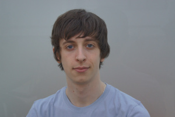
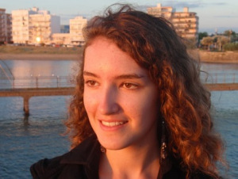

La Beear Team
La Beear Team est composée de 4 étudiants de l’école d’ingénieurs en informatique nommée EPITA. Le chef de projet est Stéphane et les autres membres sont Mélanie, Roselyn et Bastien.
Notre but a été de créer un jeu vidéo: un jeu en 2D qui se nomme HoriZon. Il a été développé avec XNA et a été codé en C#.
Pour voir l’évolution du projet nous vous invitons à cliquer sur l’onglet PROJET où vous pourrez observer les différents articles publiés.
Stéphane (alias "Noopy")

Bonjour, Je m'appelle Stéphane ARCHER et je suis en SUP à EPITA. L'informatique a toujours été ma passion et particulièrement l'univers des jeux vidéo. Ce projet sera pour moi l'occasion de créer en équipe mon premier jeu. Je pense avoir su poser les bases du projet HoriZon et chacun a su ensuite y apporter ses idées et sa contribution: c'est pourquoi on m'a nommé chef de projet. J'attendais essentiellement de ce projet de pouvoir perfectionner ma programmation, d'apprendre à structurer un projet, de savoir répartir les tâches et de vérifier que tous s'imbrique. Je suis heureux de voir aujourd'hui que ce que j'espérai est devenu réalité. Ce travail d'équipe m'a permit d'améliorer mes compétences.
Mélanie (alia "Méli-mélo")

Mon petit pseudo "Méli-mélo" m'est venu facilement à l'esprit en voyant le sac de noeuds s'étant formé dans ma tête après les premiers cours d'algorithmiques. N'étant ni une geek, ni une experte en programmation on pourrait se demander ce que je fais à EPITA! Eh bien j'ai toujours été attirée par les nouvelles technologies : j'ai un ordinateur, des Gameboy, un appareil photo, un iPhone, un iPad, un iPod, etc. Bref, j'ai une grande panoplie de nouvelles technologies et je me suis toujours demandée : comment a-t-on pu concevoir ces produits ? L'informatique étant l'une des grandes étapes de conception j'ai décidé d'intégrer cette grande école qu'est EPITA afin de satisfaire ma soif de savoir.
Roselyn (alias "Rose")
Damoiselles et damoiseaux, je me présente Roselyn (et non "Roselin"), épitéenne de 20 ans, avec pas moins de 2 ans en première année de médecine au compteur. La question qui revient toujours est "Pourquoi se tourner vers l'informatique?". La plupart des lycéens, lorsqu'ils s'inscrivent à l'université pour guérir le monde du cancer, oublient que le concours qu'ils vont passer repose sur l'apprentissage fastidieux de données inutiles, comme le volume de telle et telle cellule. C'est donc tout naturellement que je me suis tournée vers des études qui me passionnent, avec en bonus du Caml! Alors qu'en faculté médecine se pratique l'incinération des cours d'autrui et autres bizutages, me voilà partie pour ma toute première expérience de travail en groupe. Pour cela, nous avons constitué une équipe solide avec un taux exceptionnel de 50% de filles! De plus, HoriZon est un projet qui nous a permit de découvrir de nombreuses facettes de la programmation d'un jeu vidéo.
Bastien (alias "BinOoZ")
Salut ! Moi c'est Bastien j'ai 18 ans et je suis en SUP à EPITA. Depuis tout petit, j'ai en moi la passion de la création. Je me suis très vite rendu compte que l'outil informatique permettait de créer tout un tas de belles choses ! C'est pourquoi je me suis dirigé vers des études informatiques. Ce projet me semble donc une bonne opportunité pour moi d'exhiber cette passion de la création. Cependant, je n'ai jamais vraiment codé quoi que ce soit. J'espère donc également que cette expérience me sera bénéfique pour mes années à venir. De plus, mes idées correspondaient à celles du reste de la Team. J'ai donc été bien intégré dans le projet pour HoriZon. Je suis heureux de vous dire que la "Beear Team" a réussi à finir ce projet.